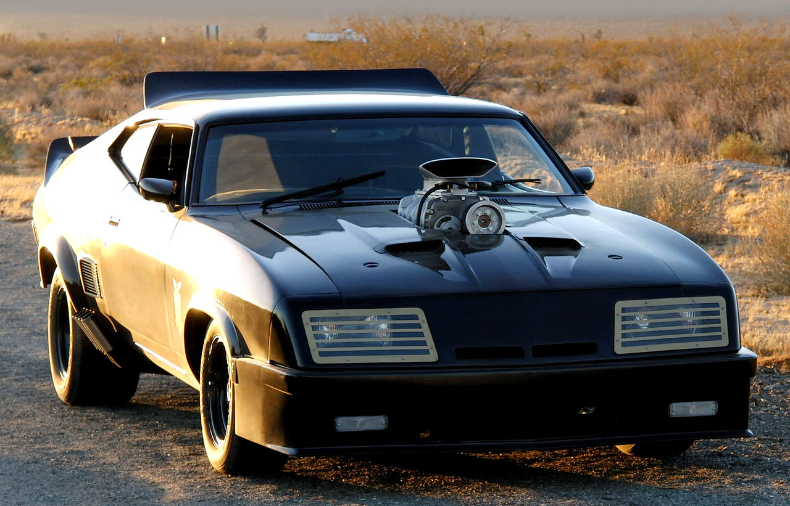
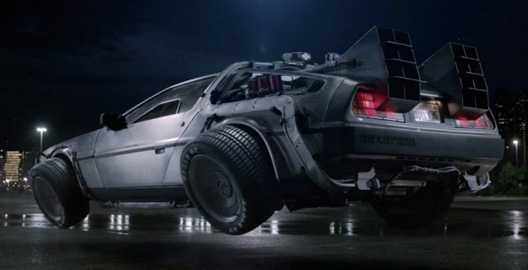
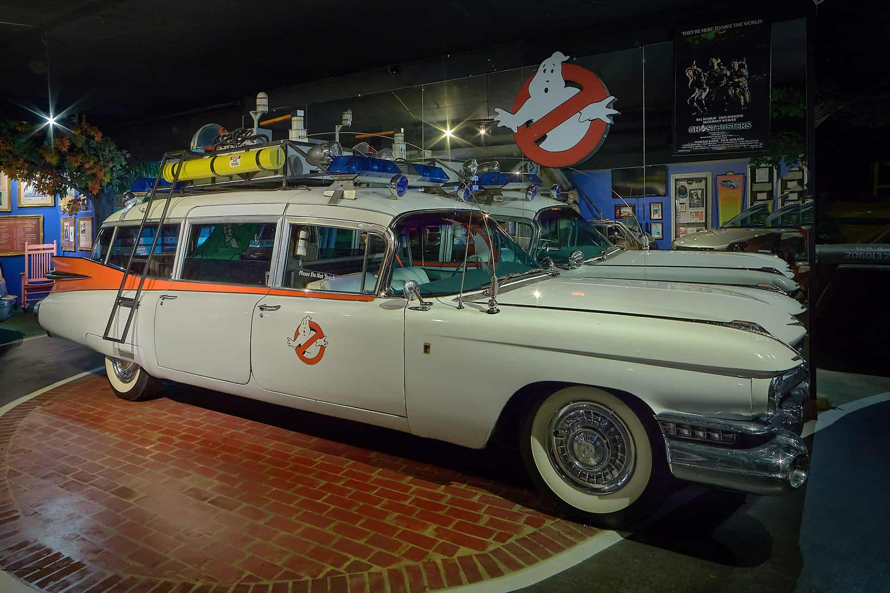
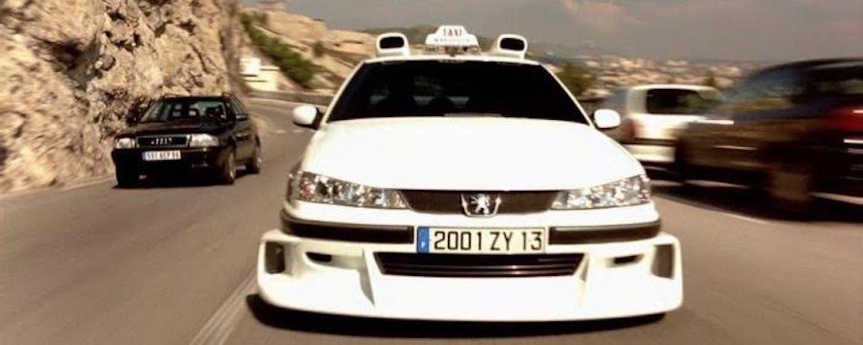
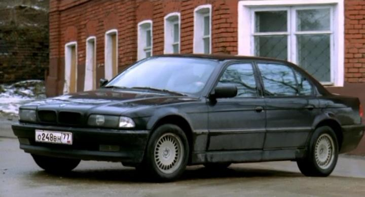

Культовые автомобили из киноиндустрии
 Автомобиль Мэла Гибсона который занимал большую часть времени на экранах в кинофильме "Безумный макс". Изюминкой и полноценными персонажами антиутопии стали «Interceptor» (англ. «Перехватчик») – тюнингованный Ford Falcon XB 1973 года выпуска и «Pursuit Special» (англ. «Специальный Преследователь») – «авторская» версия ограниченной серии GT 351 той же модели. Оба автомобиля очень скоро обрели всенародную любовь и продолжили свое киношное существование во второй части фильма, «Безумный Макс: Воин Дорог». Внешний вид «Перехватчика» был позаимствован из полицейского транспорта Мельбурна. Главным отличием его ходовой части был двигатель Cleveland V8 объемом 5,8 литра (260 л. с.), агрегатированный с четырехступенчатой «механикой». Эти автомобили и в кино являлись основой офицерских сил. Их использовали для масштабных сцен погони и финальной аварии.
 Cпортивный автомобиль, который выпускался в Северной Ирландии для американской автомобильной компании DeLorean Motor Company с 1981 по 1983 год. В 2008 году машины производились под заказ и восстанавливались силами компании DMC Texas. Более распространённым названием стало DeLorean, так как это была единственная модель, выпускавшаяся компанией. В DMC-12 были использованы двери типа «крыло чайки». Первый опытный образец DeLorean Safety Vehicle (DSV) появился в марте 1977 года, а производство началось в 1981 году (первый DMC-12 сошёл с конвейера 21 января на фабрике DMC в Данмурри в Северной Ирландии). В течение его производства несколько деталей автомобиля были изменены (капот, колёса и интерьер). До прекращения производства в 1983 году было изготовлено около девяти тысяч экземпляров DMC-12, из которых примерно восемь тысяч сохранились до наших дней. Легендарная машина кино серии "Назад в будущее" в которой она принимала роль машины времени. На схемках было множество проблем с её эксплуатированием (постоянно что-то ломалось, особенно коробка передач). Несмотря на все эти недостатки это не помешало ей войти в историю как самый узнаваемый автомобиль мира.
 Cadillac Miller-Meteor или «ECTO 1» выпускался в 50-е годы прошлого века в США как автомобиль скорой помощи или... катафалк. Однако эта модель известна больше как необычная машина необычных мужчин – охотников за приведениями. По характеристикам, кстати, автомобиль не самый «слабенький» среди тех, что выпускался в те годы в США. 6,4-литровый мотор V-8, 622 сантиметра в длину, автоматическая трансмиссия – достаточно неплохие характеристики для катафалка. Стоит также отметить, что CadillacMiller-Meteor в 1959 году был выпущен лишь в количестве двух тысяч экземпляров. Вес автомобиля приближался к 2,5 тоннам. А мощность двигателя равнялась 310 л.с. с объемом 6,3 л. Создатели фильма изначально планировали, что CadillacMiller-Meteor будет черного цвета. Однако из-за большого количества съемок в ночное время, авто пришлось оставить в привычном белом цвете.
 Свою известность получила благодаря съёмкам в фильме "Такси". Фильм собрал мировую известность, а его прокат превысил 200 млн. $. Главной её особенностью в фильме было то, что она могла трансформироваться в более быструю версию себя и тягаться даже с самыми быстрыми спорт карами. В отличие от оригинальной модели, усовершенствованное такси имеет аэродинамические спойлеры, крылья, двойные выхлопные трубы и колеса размером в 17 дюймов. Создателям фильма пришлось постараться и сконструировать пять автомобилей Peugeot 406, которые бы с легкостью выполняли порученные трюки. Примечательно, что два экземпляра принадлежали к классу спортивных машин Grand Touring.
 Дерзкий, но представительский автомобиль BMW 750IL, на котором разъезжают герои фильма «Бумер», выпускался лишь с 1994 по 2001 год и вышел из серии BMW Е32. В свое время про данное авто писали песни, также упоминался и в романах. Не понятно, что вызвало такой резонанс в обществе в 2003 году – сам автомобиль или фильм. Но популярность была просто ошеломляющая. Технические характеристики BMW 750IL также будоражат воображение – 250 километров в час за 16,5 секунд. Не каждый автомобиль может похвастаться такой резвостью. Однако не стоит забывать, что в Германии – стране производителе – к такой скорости и дороги располагают, и автобаны. В России же, что нам доказывает фильм «Бумер», от этого одни сплошные неприятности.